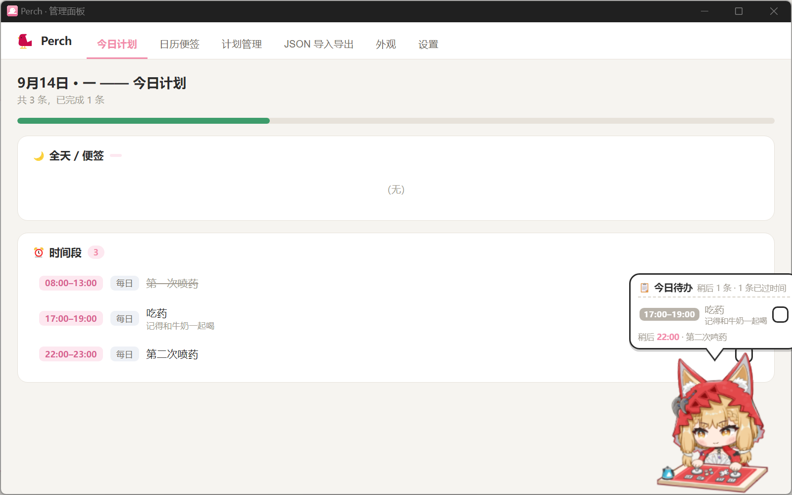
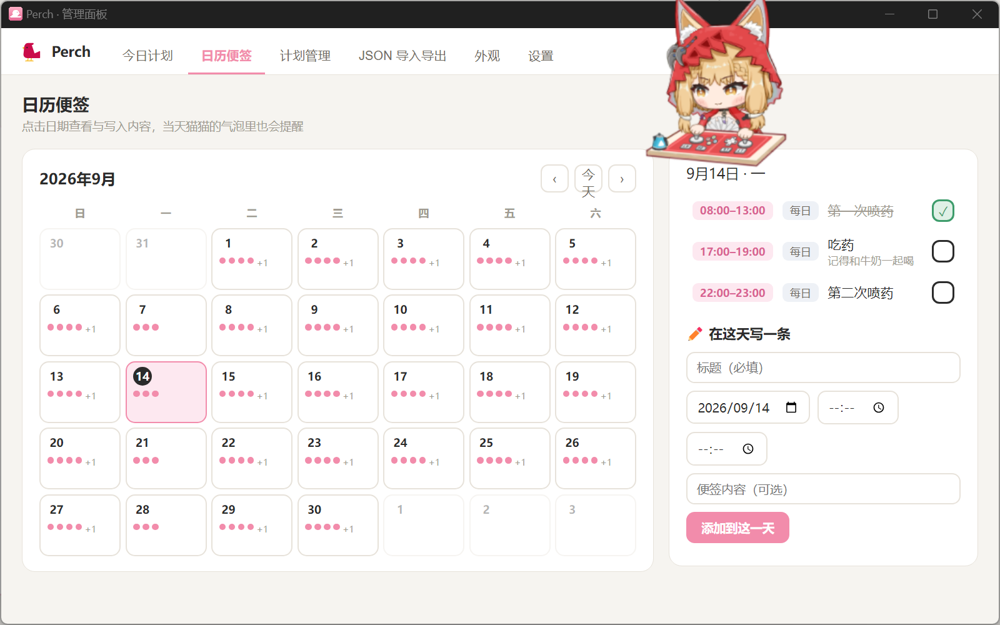
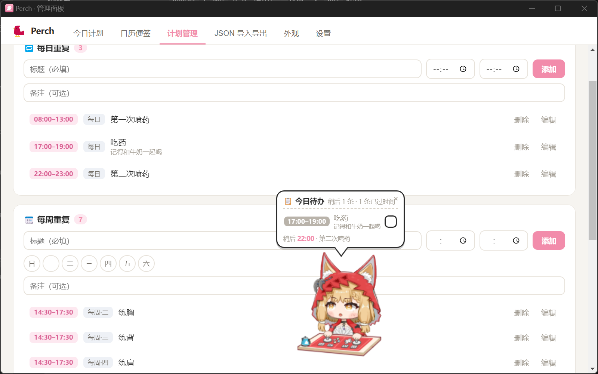
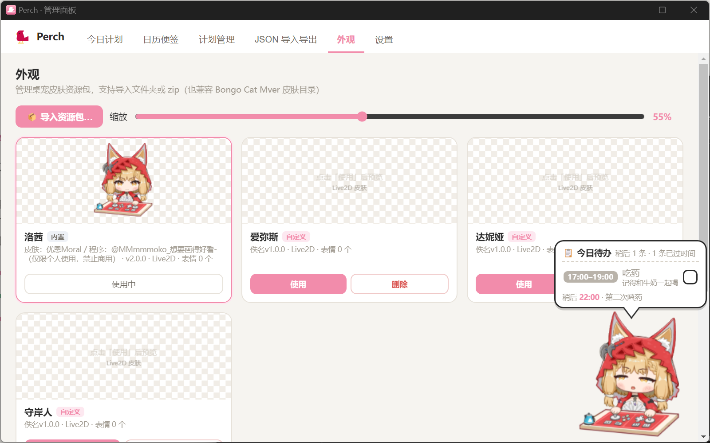

01
它怎么提醒你
计划可以每天重复、每周固定几天,或只在某个日期出现一次;每条都能带时间段, 留空就是全天。空闲时头顶气泡常驻显示“进行中”的那件事——到点了,猫猫弹跳一下、 换个表情,提醒就来了。
- 每日 / 每周 / 单次,三种计划模式
- 时间段自由设定,留空即全天任务
- 到点弹跳 + 表情变化,提醒不打扰
02
管理面板
点一下猫猫就打开管理面板,和它自己一样分成几个页签—— 左边看今天、右边排计划,想改哪块点哪块。

今天要做的事,一眼看完
顶部进度条显示完成比例,下面就是今天的计划列表。在气泡或这里点一下 ✓ 就算完成,当天消失、次日自动重现。

跳出“今天”,看看这个月
月历视图里,有计划的日期会标上圆点。临时想加个某天的提醒,直接在日历上点选——单次计划就像一张贴在那天的便签。

三种节奏,随便混着用
每天要做的、每周固定几天的、只在某天出现一次的,混在同一个列表里各自守时。改时间、改内容、删除,都在这一页完成。

03
换一张脸,还是同一只猫
内置于 Live2D Cubism 的皮肤带物理演算、眨眼与呼吸,猫爪按下还有反应; 分层 PNG 皮肤同样支持。兼容 Bongo Cat Mver 社区皮肤——文件夹或 zip 放进来,自动转换导入。
- Live2D:物理演算 / 眨眼 / 呼吸 / 按爪动画
- 分层 PNG:body / face / 左右手分层叠加
- 兼容 Mver 皮肤包,拖进来即换装
04
还藏在细节里
它是一只长期趴在桌面上的猫,所以不太吵、也不太占资源。
-
托盘与菜单
左键点猫开面板,右键出菜单:今日计划、管理面板、置顶开关、退出。
-
记得住位置
窗口位置、猫猫缩放都记在配置里;开机自启可选,想让它一直在就在。
-
JSON 导入导出
计划可整体导出备份,也能整包导入;导入时校验格式,可选合并或替换。
-
轻量运行
默认禁用硬件加速、限制到 24fps,渲染进程崩溃会自动重载。
-
便携版
除安装包外另出便携版,解压即用,不往系统里写东西。
-
勾选留痕
完成记录保留 120 天,回看这阵子到底做完了些什么。